ทำไม "พาที" ถึงเป็นศิลปินคนโปรดที่อยากแนะนำ?
ในวันที่โลกหมุนเร็วจนเราเหนื่อยล้า หรือในวันที่รู้สึกพ่ายแพ้ เสียงดนตรีของพาทีคือพื้นที่ปลอดภัยที่คอยโอบกอดความรู้สึกอย่างจริงใจที่สุด
ความจริงใจและเรียบง่าย
ดนตรีแนว Folk/Rock ที่ฟังง่าย สัมผัสได้ถึงความจริงใจ ไม่ปรุงแต่งจนเกินไป ให้ความรู้สึกอบอุ่นเหมือนเพื่อนสนิทมานั่งเล่นดนตรีให้ฟังข้างๆ
ไดนามิกที่ทรงพลัง
เพลงของพาทีมีมิติที่หลากหลาย เริ่มต้นด้วยความอ่อนโยน แผ่วเบา ชวนให้ดำดิ่ง ก่อนจะค่อยๆ ไต่ระดับและระเบิดพลังอารมณ์ออกมาอย่างท่วมท้นในเพลงเดียว
เนื้อหาดั่งบทกวี
ร้อยเรียงคำร้องด้วยภาษาที่ลึกซึ้ง เชื่อมโยงกับจิตใจของผู้คน ไม่ว่าจะเป็นการเติบโต ความฝัน ความเจ็บปวด หรือความหวัง
รู้จักตัวตนของ "พาที"
พาที (Par-T) เป็นศิลปินแนวดนตรี Folk/Rock ภายใต้สังกัดค่าย BRIDGE จุดเด่นสำคัญที่ทำให้ตกหลุมรักศิลปินคนนี้คือ "การแสดงสดที่เป็นธรรมชาติและมีชีวิตชีวา"
ทุกครั้งที่พาทีอยู่บนเวที จะส่งผ่านความเป็นมิตรที่เข้าถึงง่าย สร้างบรรยากาศอบอุ่นเหมือนกลุ่มเพื่อนที่มารวมตัวกันเล่นดนตรี แต่ในขณะเดียวกันก็สามารถสื่อสารสาระสำคัญและอารมณ์ของเพลงได้อย่างลึกซึ้งและจริงใจ ทำให้ผู้ฟังรู้สึกว่าเราไม่ได้กำลังเดินทางอยู่เพียงลำพังบนโลกใบนี้
ความทรงจำ & บรรยากาศ (Gallery)
ภาพถ่ายบรรยากาศและตัวตนทางดนตรีของพาที
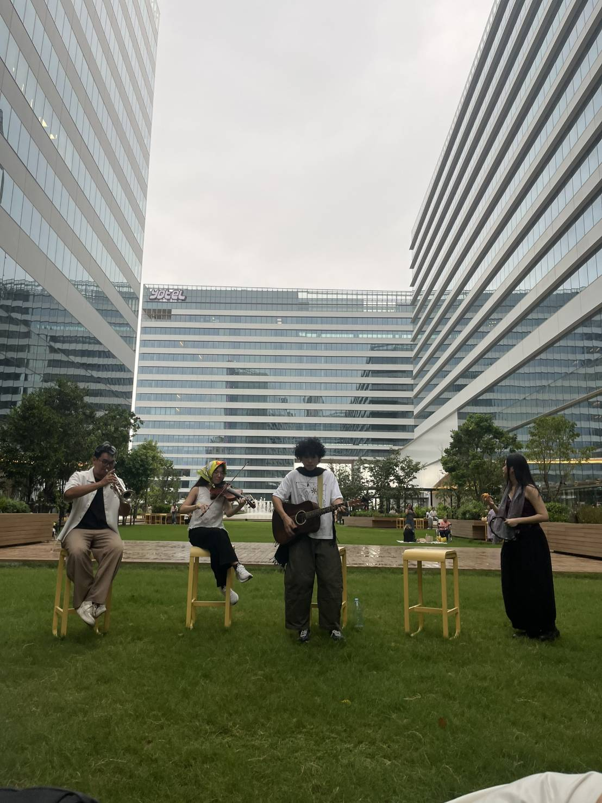
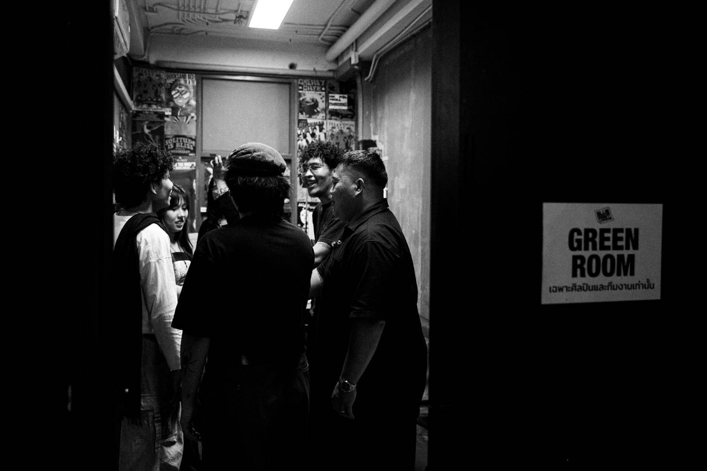
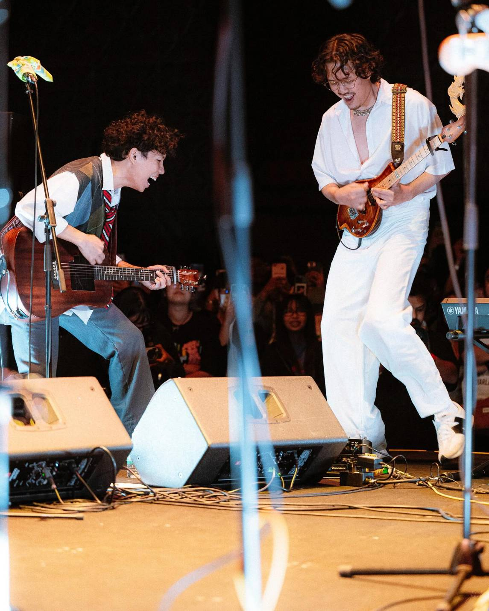
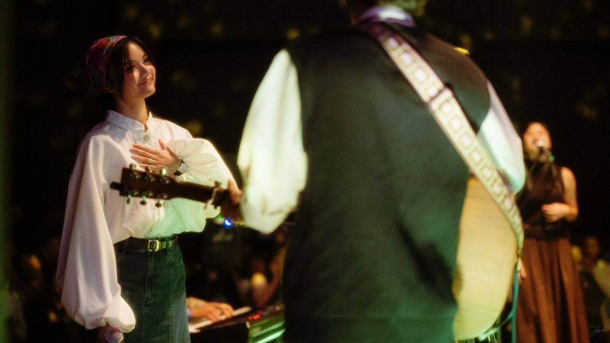
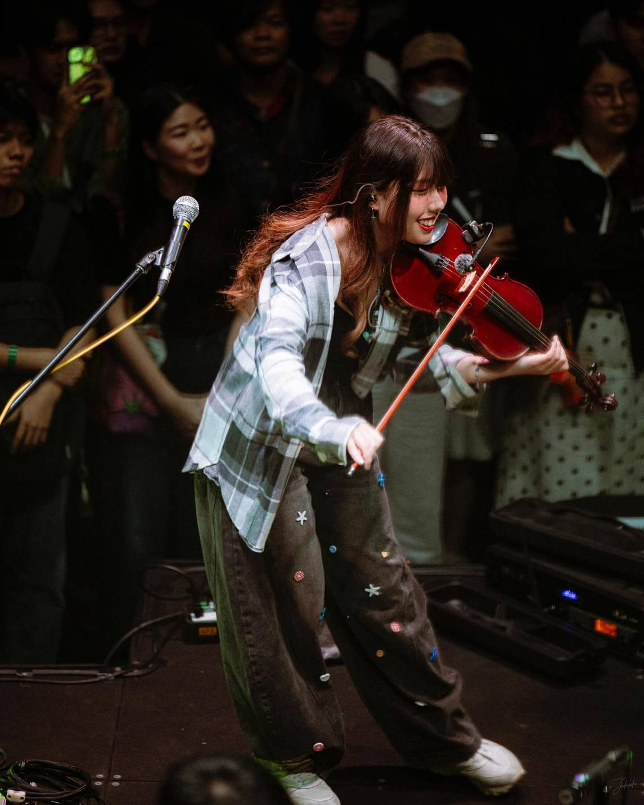
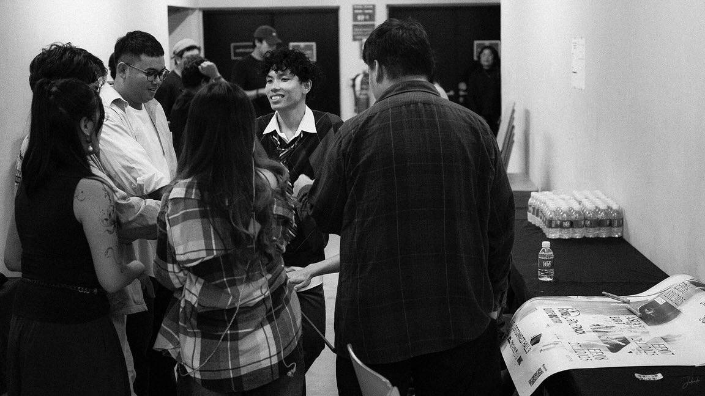
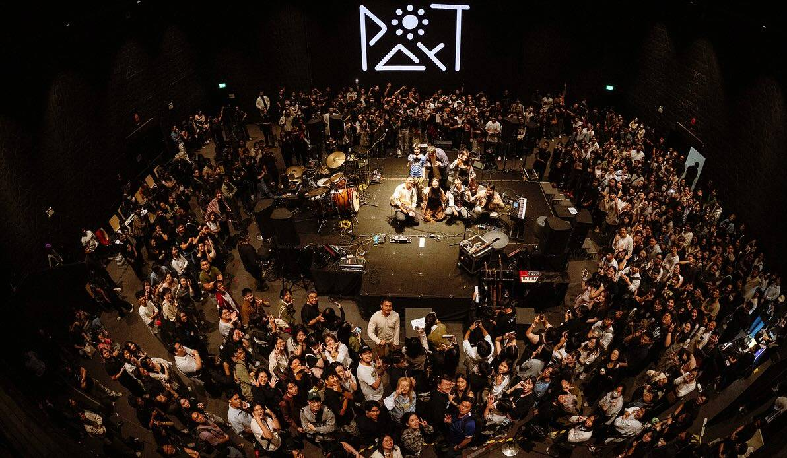
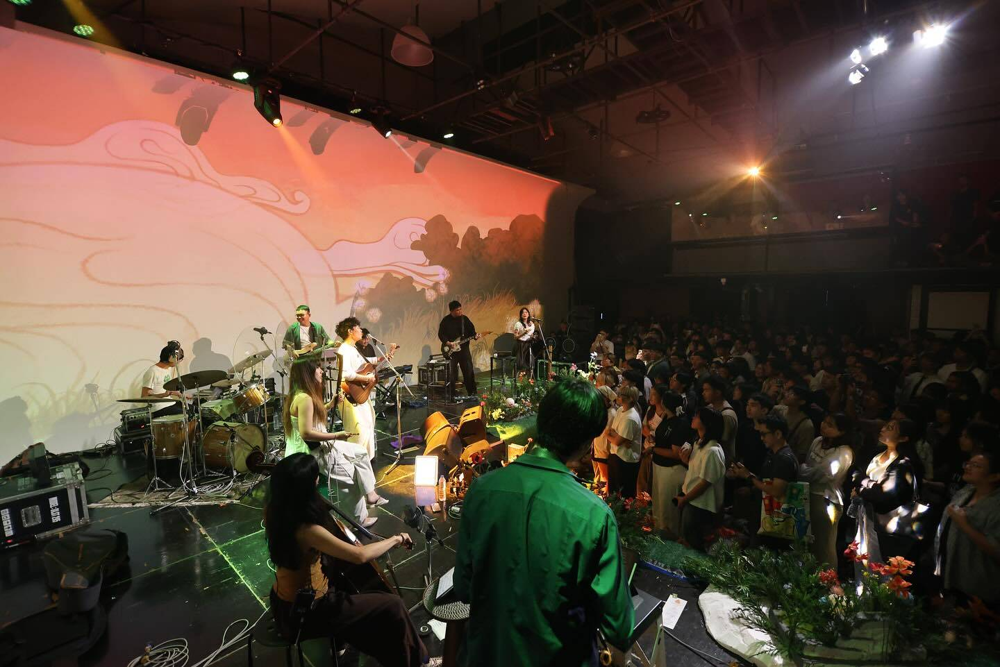
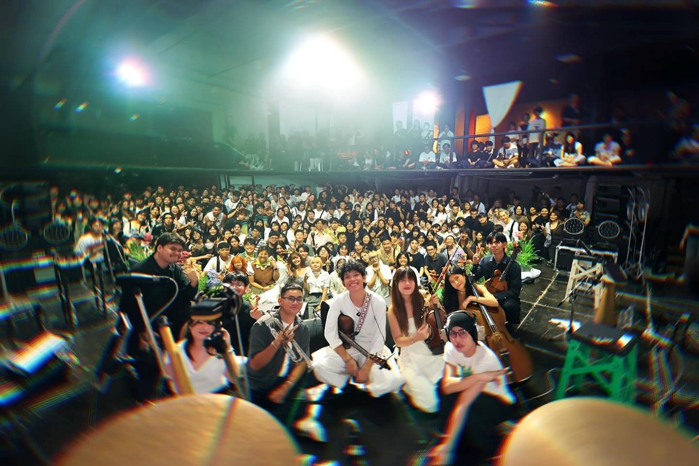
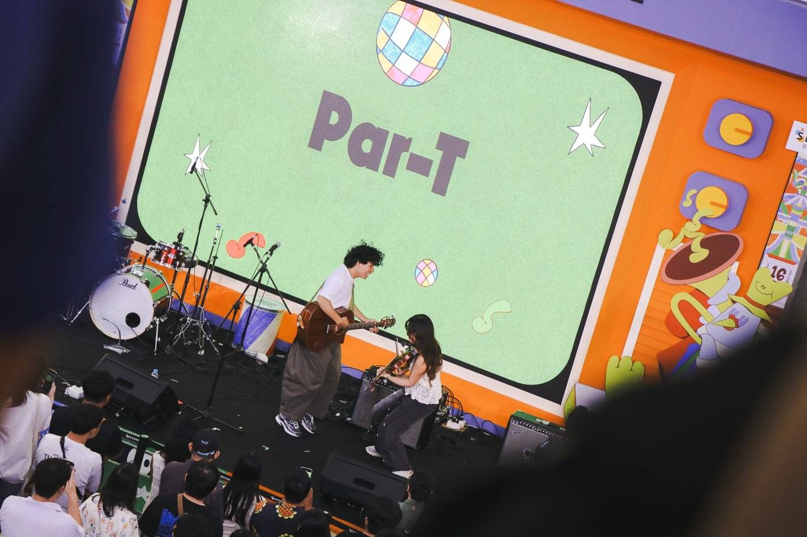
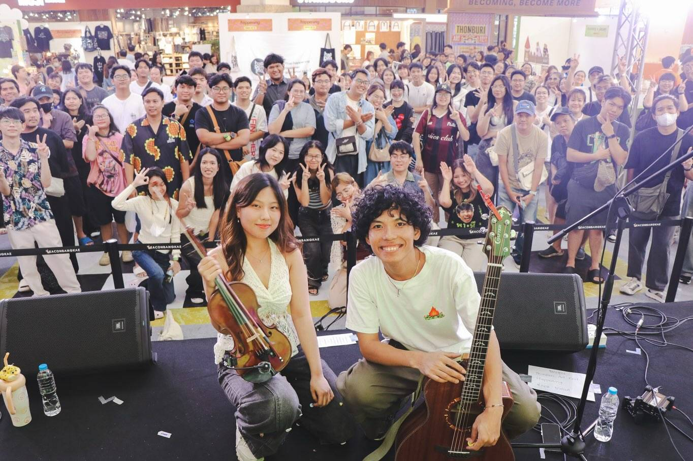

4 เพลงแนะนำที่ต้องฟัง (Official Releases)
หากยังไม่เคยฟังเพลงของพาที แนะนำให้เริ่มต้นจาก 4 บทเพลงนี้:
หากฉันเป็นนก (Bird Hymns)
Official MV • BRIDGE
“หากฉันเป็นนกก็รอวันบิน เป็นดอกไม้ก็รอวันบาน
รอเพียงฤดูกาล สักวันจะเป็นของเรา”
บทเพลงแห่งความหวังและการรอคอยจังหวะเวลาที่คู่ควร เติมพลังใจในวันที่รู้สึกท้อแท้ได้ดีที่สุด
▶ ฟังเพลงนี้บน YouTubeฉันวิ่งตามไม่ทันแล้วโลกใบนี้
Official MV • GeneLab
“ถ้าฉันวิ่งไม่ไหว แล้วเธอจะเดินด้วยกันไหม... ไว้เมื่อเราพร้อมค่อยวิ่งกันใหม่”
เพลงสำหรับคนที่กำลังเหนื่อยล้า เตือนสติให้หยุดพักและมองเห็นความงดงามข้างในใจ
▶ ฟังเพลงนี้บน YouTubeเส้นชัยของผู้แพ้
Official Visualizer • 19.Official
“เปลี่ยนจากการพ่ายแพ้ในวันก่อน เปลี่ยนเป็นการยอมรับในความอ่อนแอ”
การโอบกอดตัวเองในวันที่ไม่ได้เป็นผู้ชนะ และกล้าก้าวเดินต่อด้วยใจที่เข้มแข็ง
▶ ฟังเพลงนี้บน YouTubeลาก่อนเธอที่รัก [fare(not)well]
Official MV • GeneLab
“ลาก่อนเธอที่รัก หวังว่าจะได้พบกันอีก... ในวันที่ดีกว่านี้”
การบอกลาที่เต็มไปด้วยความเข้าใจ แม้เจ็บปวดแต่เป็นบทเรียนสำคัญของการเติบโต
▶ ฟังเพลงนี้บน YouTube
ร่วมเดินทางไปกับ "พาที"
ติดตามผลงาน การปล่อยเพลงใหม่ และตารางการแสดงสดได้ที่: